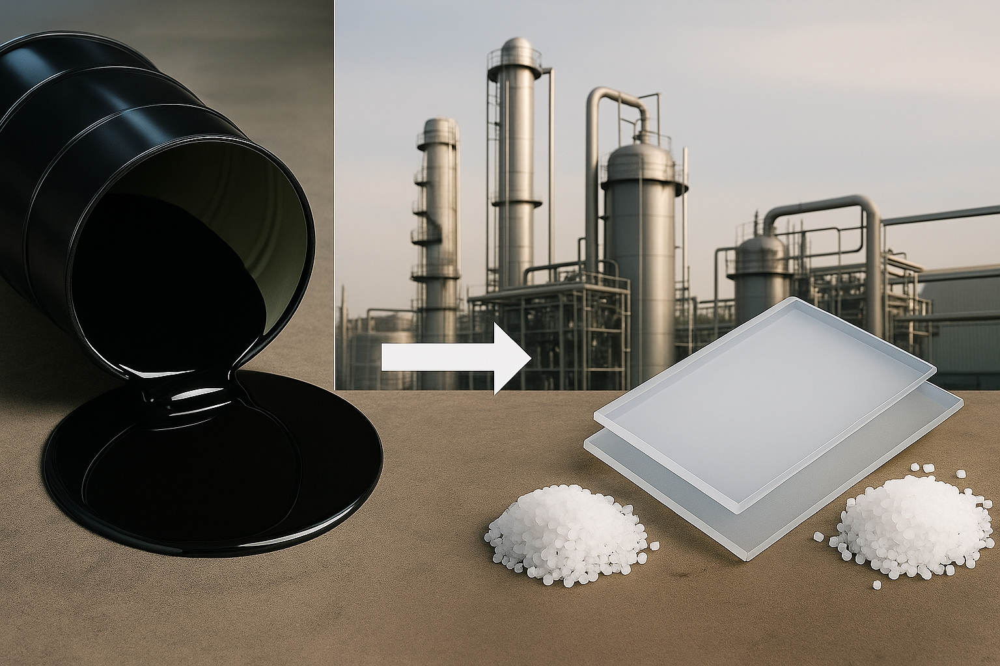
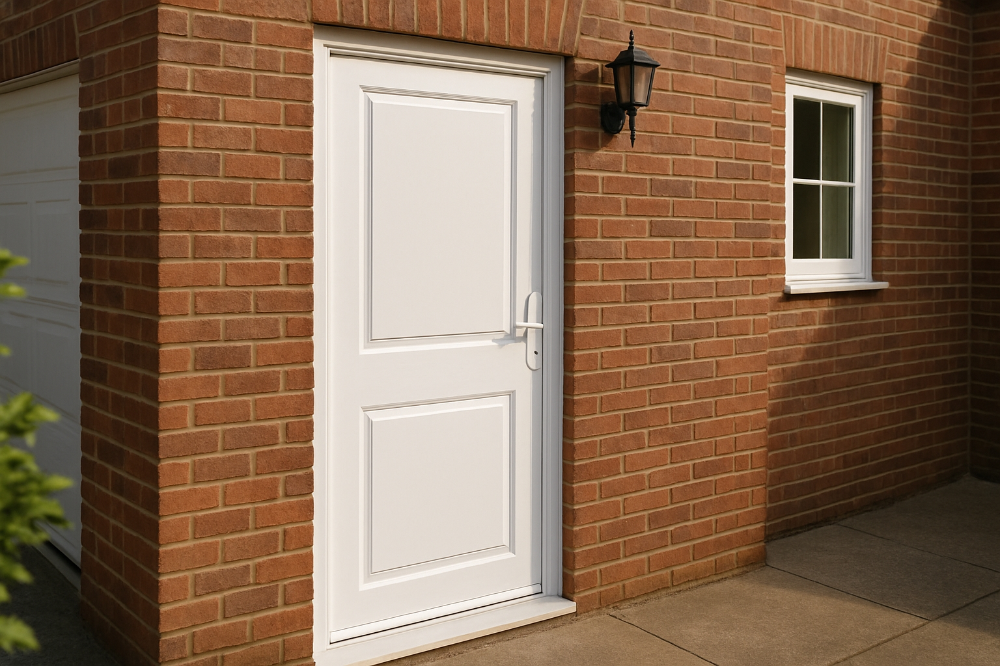

Porte en PVC
Porte en bois
Porte en bois renforcé
Porte en acier
Porte haute performance
Les types de portes d’entrée
La porte en PVC
Explication :
La porte en PVC est fabriquée à partir d’un plastique appelé polychlorure de vinyle. Ce matériau est léger, solide et résiste bien à l’humidité. Il ne rouille pas, ne se déforme pas facilement et ne demande presque aucun entretien. Le PVC peut être coloré ou moulé pour imiter d’autres matériaux, comme le bois.
Épaisseur : 30 mm — épaisseur la plus courante pour ce type de porte
Historique :
Les portes en PVC sont apparues dans les années 1970. Elles se sont rapidement répandues dans les maisons grâce à leur prix abordable, leur facilité d’installation et leur bonne tenue dans le temps.

